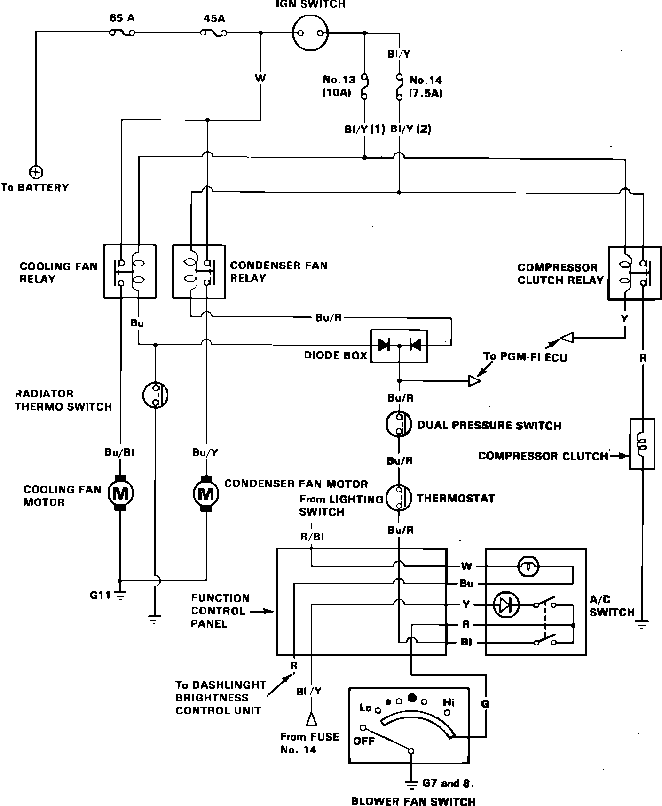
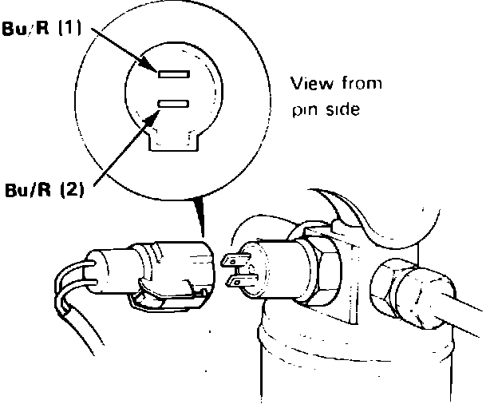

Radiator Cooling Fan Motor: Testing and Inspection
Fig. 1 Electric cooling fan wiring circuit. 1986-87 Integra:

1. Check condition of 65 amp and 45 amp fuses in engine compartment and fuse Nos. 13 and 14 in passenger compartment fuse panel, Fig. 1, and replace as necessary.
2. Disconnect diode box electrical connector and connect jumper wire between either blue/red wire terminal and ground.
3. Turn ignition switch on and note cooling fan motor and condenser fan motor operation.
4. If fan motors run, proceed to step 8. If either fan does not run, check relay operation as described under ``Component Testing.'' If relay is satisfactory, proceed to step 5.
5. Disconnect fan relay connector and check for voltage between ground and each black/yellow wire terminal. If battery voltage is present with ignition switch on, proceed to step 6. If no voltage is indicated with ignition switch on, locate and repair open in wire between relay and fuse.
6. Ensure continuity exists between diode box and each relay. If there is continuity, proceed to step 7. If there is no continuity, locate and repair open in wire between relay and diode box.
7. Disconnect fan motor electrical connectors and apply battery voltage to each motor. If motor now operates, locate and repair open in circuit between relay and fan motor connector. If motor does not operate, it is defective and must be replaced.
Fig. 2 Pressure switch electrical connector. 1986-87 Integra:

8. Disconnect pressure switch electrical connector and connect blue/red (2) wire terminal to ground, Fig. 2. If fans do not operate, locate and repair open in wire between diode box and pressure switch. If fans operate, replace pressure switch.